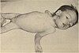

convulsion

Definition: A convulsion is a medical condition where the body muscles contract and relax rapidly and repeatedly, resulting in uncontrolled shaking. Because epileptic seizures typically include convulsions, the term convulsion is often used as a synonym for seizure. However, not all epileptic seizures result in convulsions, and not all convulsions are caused by epileptic seizures. Non-epileptic convulsions have no relation with epilepsy, and are caused by non-epileptic seizures.Convulsions can be caused by epilepsy, infections (including a severe form of listeriosis which is caused by eating food contaminated by Listeria Monocytogenes), brain trauma, or other medical conditions. They can also occur from an electric shock or improperly enriched air for scuba diving.The word fit is sometimes used to mean a convulsion or epileptic seizure.
Source: Wikipedia
Wikipedia Page (Something wrong with this association? Let us know.)
Wikidata Page (Something wrong with this association? Let us know.)